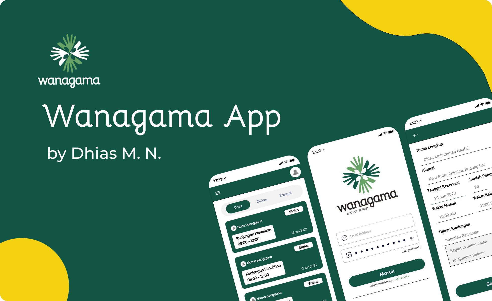

This is Everything About me!

Hello There! my name is Dhias Muhammad Naufal
A passionate and determined determined recent graduate in Information Engineering, committed to continuous learning and eager to apply my knowledge to real-world challenges. I am highly interested in the field of Software Engineering, such as designing applications and solving problems that arise within software systems. A curious thinker who's ambitious, loves learning, doesn't give up easily, and enjoys solving problems. I thrive in both team-oriented environments, where collaboration fosters innovation, and when working independently to tackle complex problems.
Education
Working Experience
Flutter Developer at KHDTK Wanagama
- Translate the client need into software requirements to ensure that the development process aligns with the customer's expectations
- Successfully developed a comprehensive Flutter application known as the Wanagama App, specifically designed for the purpose of online booking.
- Successfully created documentation for the Wanagama App, including the creation of a System Requirements Specification (SRS) to facilitate further development needs.
- Effectively showcased the completed application to the Wanagama Directorate during a comprehensive final presentation, highlighting its features, functionality, and potential impact.
PT Ylabs Indonesia
- Successfully organized the Developer Bootcamp event, focusing on startup technology in Indonesia, engaging more than 80 participants.
- Orchestrated the Hustler event, delving into business strategy and investor pitching, drawing the participation of over 100 attendees from across Indonesia.
- Hosted the Ytalks talk show, shedding light on successful startup strategies, which garnered the attendance of 100 participants.
- Conducted two webinars that effectively attracted a 100+ participant audience, promoting the company's programs.
My Projects
| KHDTK Wanagama Project | MEDQ Final Project |
|---|---|
|  |

|